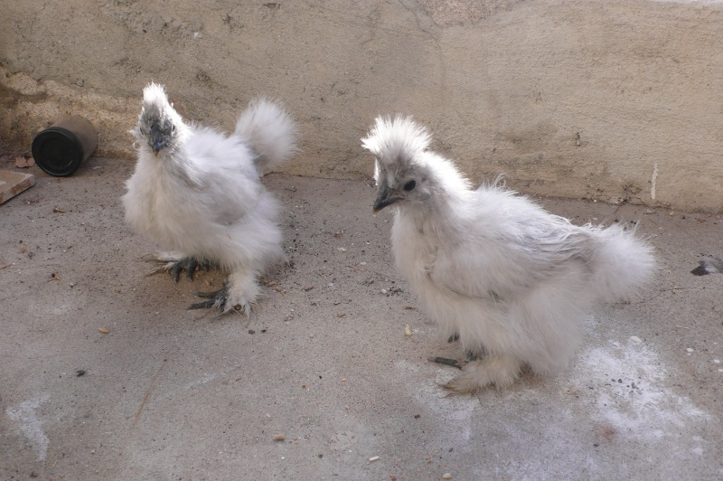
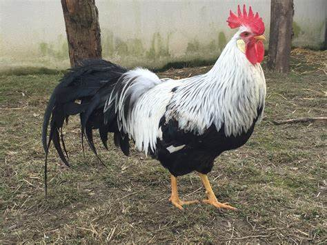

April 25, 2017
The company was founded on April 25, 2017, in the pavilions of the Togolese capital and today has more than 1.2 million
customers in the ECOWAS area. He receives the 3rd prize for the best farm producer and seller of chickens, oxen, goats,
pigs of various breeds. To date, we have more than 100 employees with a salary of an average of 100,000 FCFA


The Dutch hen is a pretty hen known for its hoopoe forming a pretty pompom on its head.
This is a breed of domestic hen native to the Netherlands. His pompom, sometimes abundant, he
gives a very special look but above all very chic! It is of different color from the plumage this
which gives it an instant charm. The Dutch hen is very docile and friendly, a much appreciated hen
young and old that will make you crack very quickly. Its eggs of small calibers are white in color.

The Silk Hen is a hen with a very abundant and excessively silky plumage that suggests that it carries fur.
Formerly called Silk Negro, it is a breed of domestic hen native to China. She also has a kind of small hoopoe
on her head that gives her even more charm. This hen is generally calm, cuddly and is easily approached and manipulated by
humans. Its plumage is solid in color, is it has feathers on the legs, which makes it even cuter. This hen is a very good brooder
and a very good mother. She will incubate the eggs of any hen and will raise the chicks with great care.

This is the most widespread breed of hen in the world. In France, there
are no less than 17 different types of plumage for the Leghorn. If This
pullet from Italy (Livorno) is so successful, it is of course because it
lays a lot of eggs: about 4 per week!
These are mixed breeds: milk and meat, increasingly oriented towards meat production.
In the past, they were also used for their pulling force. These are breeds renowned
for their hardiness in free-range breeding: in Spain and Portugal they are raised in
large herds over large areas where summer drought is rife. They have acquired an ability
to regain their body mass after a period of scarcity.
An African pig (or river pig) is an animal that differs significantly from its usual counterparts.
The animal has an interesting appearance and character, noticeably different from what is usual in
ordinary domestic pigs. Pistachio pigs are strong, agile and fast, which helps them survive in the wild.
White pig with drooping ears, the "French Landrace" has a long and tapered body. Sweet and good milkmaids, sows are renowned for their maternal qualities.